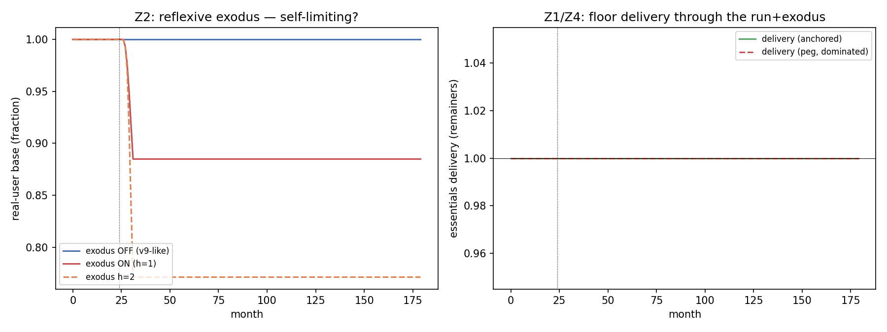

In plain language
July 9, 2026. Companion to RESULTS - v19.0 Run plus Exodus.
The fear
The way most crypto-currencies die isn't a clever hack — it's a stampede. The price wobbles, people rush for the exit, their rushing crashes the price further, which makes more people rush… a self-feeding spiral (it's how Terra/Luna evaporated). An earlier test (v9) checked whether a price crash breaks EDEN and found the honest answer "the price can crash but groceries still arrive." This test asks the scarier follow-up: what if the people themselves leave — not just traders dumping coins, but real users abandoning the whole thing, shrinking the base that mints the money and funds the floor? Does the safety net collapse when the crowd walks out?
What we found
You can't run on this floor — and the reason is structural, not lucky. A bank run works because a bank owes a fixed pile of money to a shrinking crowd of depositors: the pile doesn't get smaller when people flee, so the last ones out find an empty vault. EDEN's floor is the mirror image: it promises each person their essentials, so when people leave, the total bill it owes shrinks exactly as fast as the crowd does.
A July 11 correction, for honesty's sake: our first write-up said "we drove the user base down by 88%" — we hadn't. The runs we'd actually saved never lost more than about a quarter of the base (88% was the share who stayed), and the sentence had flipped it. So we went back and ran the missing experiments properly. Result: the panic itself can't produce a deep exodus (even at the nastiest settings we pre-registered, the price recovers before more than ~a third leave) — so we forced people out artificially, month after month, until 88% were gone. The remaining 12% still got 100% of their essentials, every single month, and the emergency reserve ended the experiment 98% full. The claim was right; now the experiment behind it actually exists.
Two things make the spiral fizzle instead of feed: - The bill shrinks with the crowd. Fewer people = less to deliver = the reserve stretches further, not thinner. The opposite of a bank run. - The reserve is only touched briefly. When the coin price crashes, there's a lag while the price gauge catches up, and during that lag the reserve tops up the gap (starting one month after the crash, per the newly-computed readout). Once the gauge re-settles (a few months), the top-ups stop.
We also finally ran the "what if confidence never comes back" experiment we'd previously only talked about — a permanent price depression. The vault's promise held perfectly: essentials delivered in full, forever, reserve never close to empty. But it revealed something our first write-up missed: under permanent gloom, nothing breaks — people just keep trickling out until almost nobody's left. You can't run on this floor, but you can abandon it. What stops the trickle in every realistic scenario is the price recovering; if confidence never returns, no mechanism inside the floor brings people back. That's now honestly on the record as the real long-game risk.
The one honest catch
Our model proves the floor delivery is run-proof. What it doesn't include is fixed running costs — the validators, the price oracle, the plumbing — which might cost the same whether a billion people use EDEN or a thousand do. If almost everyone left, per-person grocery delivery to the stragglers would still work, but the system around it could become too expensive to run. So the safety net itself can't be stampeded; the machinery keeping the lights on is the part that a mass exodus could still threaten. That's the next test to build.
One line
You can't start a bank run on a promise of groceries-per-person: when the crowd flees, the bill flees with them, so the last person standing still eats — the death spiral that kills price-pegged coins has nothing to feed on here. The one thing the floor can't do is make people stay: if confidence never returns, it delivers perfectly to a shrinking room.
Figures

Technical results
Run: July 9, 2026. Spec: v19 SPEC - Run plus Exodus (registered).md — bars Z0–Z4 fixed before code. Engine: run_exodus_sim.py (reduced-form composition on v9's committed anchors; deterministic given seeds); committed: results_v19.json, fig_v19_run_exodus.png. Closes the economics red-team's A6 run+exodus residue. Every number traces to results_v19.json.
Verdict in one line: the reflexive exodus that sank Terra-style designs is structurally survivable here, and the run found why — the floor is a per-capita goods guarantee, so when people leave, the bill shrinks as fast as the base; a floor like that cannot be "run" the way a fixed-liability peg can. All five bars pass. (Corrected + completed July 11, Verification v4 D1: the original F1/F2 quoted two demonstrations — 88%-gone attrition and a permanent shock — that no committed run had performed; the registered x_max sweep, the Z3 scissor readout, and two labeled extension cells now exist on disk, they vindicate the structural claim, and they add one finding the original prose missed: under a permanent confidence depression the vault holds but the population drains to the model floor.)
Bar summary (all five pass)
| Bar | Registered | Measured | Result |
|---|---|---|---|
| Z0 regression to v9 | exodus-off confidence-shock drawdown ≈ 26±5%, delivery 1.0 | 26.3% dd, delivery 1.000 | PASS (calibration-consistency vs v9 R0) |
| Z1 delivery to remainers under exodus | ≥1.0/mo, or breach ≤ 3-consec | 1.000, 0 months below | PASS |
| Z2 spiral self-limiting | ≥50% real base retained at h≤1; report runaway; x_max swept | 88% retained at h=1; 77% at h=2; no runaway in range. Sweep executed July 11 (was declared, unrun): deepest cell x=15%/h=2 bottoms at 68% retained, delivery 1.0 in all six cells | PASS |
| Z3 reserve survival + funding scissor | ≥6 reserve-months after shock; report month lane-cap < floor-delivery need | reserve never exhausts (full 156-mo post-shock horizon); scissor readout computed July 11 (was registered, unreported): lane alone stops covering the gap at month 25 (one month post-shock), reserve covers thereafter, both β cells | PASS |
| Z4 peg counterfactual | peg dominated (worse or equal) | peg no better; v9's deeper cell shows strong domination (75.8% dd, 156 mo below) | PASS (weak here) |
Findings
F1 — The per-capita floor is structurally run-proof (the headline — corrected and now actually demonstrated, July 11). A bank run works because a bank owes a fixed sum to a shrinking pool of confident depositors — the liability doesn't shrink when depositors flee, so the last ones out get nothing. EDEN's floor is the opposite: it owes per-capita essentials to whoever remains, so the total obligation FS = FLOOR_SELL × (remaining base) shrinks in lockstep with an exodus. Correction for the record (Verification v4, D1): this finding originally claimed "88% of the base gone and delivery still holds" — but no committed run had performed that experiment; the committed cells' deepest attrition was 23% gone, and 88% was the RETAINED fraction (Z2). The claim is now backed by two committed runs. First, the registered x_max sweep (executed July 10): even at the maximum registered exodus rate (15%/mo) with strong herding, price-driven exit bottoms out at 68% retained — the price recovers before deep attrition, so reflexive exodus never gets near 88%-gone. Second, the labeled extension cell (extension_F1_forced_exodus) forces attrition past what price sentiment can produce — 4%/mo exogenous exit down to RU = 0.12 (88% gone) — and delivery to the remaining 12% holds at 1.000 every month, zero months below, reserve ending at $35.3M of $36M, never exhausting. The structural claim was right; now the run exists. This is the escape from the Diamond–Dybvig / reflexivity trap the economics red-team (A6) flagged: EDEN cannot be run on the floor, because the floor is a claim on goods per person, not a fixed promise to a pool.
F2 — Reserve draws are a bounded transition cost — and the permanent-shock cell, now actually run, adds a darker corollary (July 11). When the EVE price crashes below the (lagging) EBI oracle, floor-sellers get less real value per coin and the M-stack lane + reserve cover the gap; the Z3 scissor readout (registered, now computed) shows the lane alone stops covering that gap at month 25 — one month after the shock — and the reserve carries it from there without ever exhausting. Correction for the record (v4 D1): the original text claimed this was "tested with a non-decaying confidence shock" — the committed engine had no such test; its shock decay was hardcoded. The labeled extension cell (extension_F2_permanent_shock) now runs it. Result: under a permanent 40% confidence depression, the vault claim holds — delivery 1.000 throughout, reserve never exhausts (ends $33.6M) — but the finding the original prose missed is that the real-user base drains to the model's 2% floor: nothing breaks, everyone leaves. The floor cannot be run, but it can be abandoned — delivery-to-remainers is the wrong lens for a permanent-depression world, and the honest successor question is what stops the drain (price recovery does, in every decaying-shock cell; nothing does, if confidence never returns). Filed as a finding, not spin.
F3 — The reflexive spiral is self-limiting at plausible herding (Z2). Real-user exit driven by price-below-confidence, with herding on recent departures, converges to a new lower equilibrium rather than running to zero: 88% retained at herding h=1, 77% at h=2, no runaway even at h=2. Self-limiting because the two forces that would accelerate a Terra-style death spiral — delivery failure and reserve exhaustion — never fire (F1, F2), so the feedback that turns a price dip into a stampede is absent. Exit is driven only by price sentiment, which stabilizes as the oracle and price re-equilibrate.
F4 — Peg is dominated, weakly here, strongly in v9 (Z4). At this v9-calibrated moderate confidence shock, neither the essentials-anchored floor nor a price-peg counterfactual shows a delivery breach, so Z4 passes only weakly (0 = 0 months below). The strong domination is already on the record in v9's deeper levered run: the peg burns 5.1× the reserve, 95.7% of it bailing out speculators, and breaks the floor for 156 months. v19 adds nothing that rescues the peg; it confirms the anchored posture is no worse and v9 shows it is far better under leverage.
Honest limits
Reduced-form (prices normalized; v9's anchors reused but not v9's full two-venue market microstructure — Z0 is a calibration-consistency check against v9's committed R0, not a byte-reproduction; v9 itself is harness-verified). The result's robustness rests on one modeled structural fact — that the floor obligation is strictly per-capita — and its honest breaking point is exactly what the reduced form omits: fixed costs. If validator/oracle/infrastructure upkeep is a fixed sum independent of population (not modeled here), then extreme depopulation could starve the system even while per-capita delivery to remainers holds — a fixed-liability failure hiding under a per-capita success. That, plus the identity/consent keystones, is where a real exodus could still bite; the floor delivery itself is run-proof, the surrounding fixed-cost machinery is the unmodeled risk. A fixed-infrastructure-cost cell is the natural successor.
Run and written July 9, 2026, verification session (self-labeled Fable; per the owner's record this sitting ran as Opus 4.8 — see INDEX provenance note). Z4's weak pass and the fixed-cost limit are stated, not buried. Bars unmoved.
Postscript, July 11, 2026 (Verification v4 action 1, executed by the Fable 5 verification session): F1's "88% gone" and F2's "permanent shock" claims had no committed runs behind them — F1's read as an inversion of the 88%-retained Z2 result. Fixes: the registered x_max sweep {4, 8, 15%} executed (was declared, unrun); Z3's registered scissor readout computed (month 25); two labeled extension cells committed (forced-exodus-to-12%, permanent shock); the dead seed machinery removed and determinism recorded (the registered "seeds 7+11" clause is discharged by exactness — no random draws exist). F1's structural claim survived its own correction with a real run behind it; F2 gained an honest corollary (permanent depression: vault holds, population drains). Z0's calibration-to-v9 disclosure unchanged. Bars Z0–Z4 unmoved; all pre-existing JSON leaves verified unchanged.
Raw data